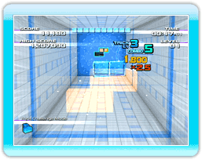

10 |
Sélection du mode de jeu |
 |
|
● Écran de sélection du mode de jeu 
・Normal (classique) 
・Endless 
・Trick Challenge (défi de figures) 
・Keydron Tutorial (tutoriel keydron) Notes : - Une leçon ne sera peut-être pas disponible avant que vous ne terminiez la précédente.
・Keydron Memories (souvenirs du keydron) Note : Faites attention. Les données effacées ne peuvent pas être récupérées.
● Écran des paramètres du mode
Note : Le nombre de keydrons, arrière-plans, étapes et niveaux disponibles augmentera au fil de votre progression dans le jeu. |
 |
 |
 |